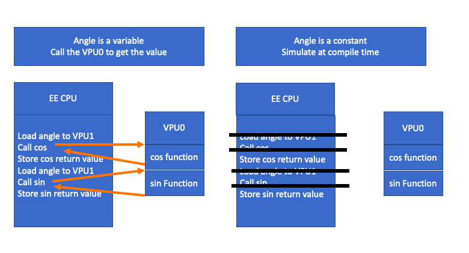

Debuggers and constexpr

I am always coming up with ideas and I have a hard time putting them down. My current idea is a way to debug constexpr functions (or other functions that have been 100% removed from the EXE), in a way that has very little overhead.
C++ is getting harder to debug, and by debug here I mean to watch a bug in slow motion in a debugger. With C++ “constexpr all of the things” libraries and crazy smart optimizing compilers can we fix this?
What if constexpr functions could optionally run on a virtual co-processor. Then you could set a breakpoint on this virtual co-processor code almost like a normal breakpoint.
Where did this idea come from? I wrote some Sin and Cos functions for EA that ran on PS2's VPU0 co-processor in the early 2000s. VPU0 was a CPU in it own right. It had 4k of instructions and 4 k of data + 16 16-bit integer registers and 32 128-bit floating point registers. The VPU0 was tricky to use VPU1 did most of the heavy lifting. (VPU1 did what would be called vertex shaders today.) VPU0's trick was it was tightly coupled with the main EE mips cpu. If I remember right the EE had one instruction to kick off a VPU0 program at some address and another one to sleep until the VPU was done. This was great you could load a lot of small little programs like Sin or Cos or other small little math functions and even kick them asynchronously then wait on them. But what if Sin or Cos in this case were given a constant parameter? With a modern compiler that could understand what both the CPU and VPU0 were doing the compiler could know it didn't need to call a VPU program to estimate some Taylor series to get the Sin or Cos value. It could just simulate this at compile time.
Now a short summary on the heart of any debugger, the breakpoint. A breakpoint is when the debugger switches one instruction into an "int 3" or other illegal instruction. When the CPU hits this int 3 an exception handler is called. The exception handler gathers all of the state from registers and saves everything, so you can continue where you left off. The CPU then idle loops waiting for the debugger to tell it to continue or trace to the next breakpoint or int 3 instruction. The debugger reads this saved state and combines it with the compiler's debug symbols and other type information to display the watch windows and call stacks.
The problem is with constexpr functions there is no instructions, no CPU or memory state to read or really anything to debug at all in the runtime. You can find the return value side effect of the constexpr functions but that is it, but you can’t tell why the value is the way it is. If you are trying to write a JSON or REGEX parser or you are debugging Taylor series in a constexpr Sin or Cos function reading what the compiler thought about in slow motion could be useful.
What if we replaced a constexpr's return value with the code needed to create this return value? We don't want to do this all of the time as that would slow down our program. What we want is 2 ways of running a constexpr function:
- A “step over” mode where we use the pre-calculated return value
- A “step into” mode where we run code on a virtual co-processor. Running in this program has no side effects to the main CPU program, but it is useful to show the programmer how the return value was calculated in slow motion
It would be useful if we could set a breakpoint in this virtual co-processor and it would break in the constexpr function every time we called it. Then we could get a mixed CPU + virtual co-processor call stack. This is just like on the PS2 but you would be debugging a mixed call stack built out of the EE and VPU0 registers and other state.
There is one thing different then a VPU0 breakpoint. We don't always call the virtual co-processor like we would in the VPU0 case. We don't even want the code to load parameters etc... we only want to store the return value of the constexpr function. When we add a breakpoint in some virtual co-processor function, we will need to find all call sites and add an int 3 real CPU breakpoint there. The debugger knowing that this is the start of a virtual co-processor call could interpret the constexpr function in slow motion. The debugger would run all of the instructions scaning for the VPU breakpoint. Once you hit the VPU breakpoint you would show the state of the real CPU and the virtual VPU. The runtime cost of this system would be zero (in your process anyways) unless you are running with a breakpoint in a constexpr function. Since the host debugger process would run the virtual co-processor code even a small embedded 8-bit embedded device with 512 bytes of ram this could still work.
How about a more detail example with some code.
Let’s just say we gave the compiler an easy problem to solve. We call a lambda that all it does is return 40 twice and add it up like the code below.
using tcallback = int(*)();
int runCallBack(tcallback func)
{
return func() + func();
}
int main(int argc, char *argv[])
{
return runCallBack([]() {
return 40;
});
}
Hopefully the compiler can see though all of the abstractions I have put in its way and we should get some ASM generated like below. The return value of the constexpr is at instruction address 0x8000.
main: # @main
0x8000: mov eax, 80
ret
Our goal is if we set a breakpoint in runCallBack that I could even though runCallBack does not get called. To implement the breakpoint we write an int 3 over the mov eax, 80. When the computer hit this break the code would then be controlled by the debugger. The debugger could have a table of instructions address to the compilers debug VPU code.
main: # @main
0x8000: int 3 // was mov eax, 80
ret
We would need some type of table of instructions address to VPU code address to know how to jump from CPU space to the VPU co-processor space.
0x8000: 0xffffffff60000000
Note that VPU address are not CPU addresses and are not really addressable by the CPU as they don’t really need to exist to make the program run. They are like addresses in another process space. Maybe just for debugging you would want addresses that can’t exist in the CPU address space just so you can never make the mistake.
So what would be at VPU address 0xffffffff60000000 well the code that the compiler rightly optimized out. Maybe it would look like the code below.
0xffffffff60000000:
mov edi, offset main::$_0::__invoke()
jmp runCallBack(int (*)())
main::$_0::__invoke(): # @"main::$_0::__invoke()"
mov eax, 40
ret
runCallBack(int (*)()): # @runCallBack(int (*)())
push rbp
push rbx
push rax
mov rbx, rdi
call rdi
mov ebp, eax
call rbx
add eax, ebp
add rsp, 8
pop rbx
pop rbp
ret
This VPU code does not have to be intel instructions it could be clang IR or JVM or any other instruction set. When you call into this VPU ASM you would just make sure that no state could leak out. So it would be like this VPU was running on another virtual computer.
You need the VPU ASM code so you have somewhere to set breakpoints that you can step though this code if you want to. If you wanted to break just in between the 2 lambdas no problem. Just set your VPU breakpoint at that VPU ASM location and also set a real int 3 breakpoint at each call site so the debugger can switch to the interpreted VPU code to search for the VPU breakpoint.
This can’t help all of C++ current debugging problems. Debuggers are getting harder to understand as compilers get better at reordering things as well. I don’t think that can help with this problem. But if we want to add meta classes or something crazy like that we need to consider how we will slow things down so humans can read each other’s code.
Also I don’t really know what to do with side effects here. Maybe VPU code should have no side effects just like constexpr code now. Maybe VPU code can jump back to CPU code to call print or do file IO. A call to a constexpr VPU function maybe looks like a list of CPU code that does all of its side effects.
I have no idea how to work on something like this. I don’t see anyone wanting me to learn how for my day job so likely this will stay just an idea, but it was fun to put this idea on paper. Since 2010 not one paper C++ has the word debug in the title maybe that is saying now is a good time to think about how to debug C++ in a new way.